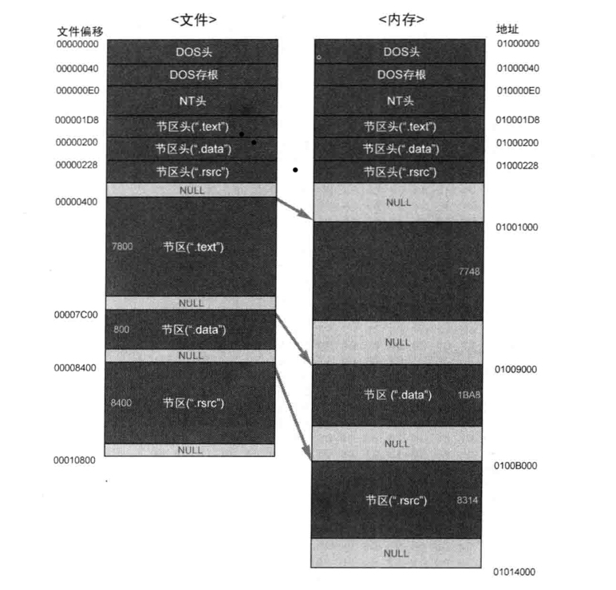

前言
PE文件的全称是Portable Executable，意为可移植的可执行的文件，常见的EXE、DLL、OCX、SYS、COM都是PE文件，PE文件是微软Windows操作系统上的程序文件（可能是间接被执行，如DLL）
——百度百科简述
PE文件使用的是平面地址空间，代码和数据被合并在一起，组成庞大的组织结构。文件的内容分割为不同的区块（如.data、.idata、.text，这些区块甚至可以自己命名），区段中包含代码数据，各个区块按照页边界来对齐，区块没有限制大小，是一个连续的结构。每块都有他自己在内存中的属性，比如：这个块是否可读可写，或者只读等等。
在加载的时候，windows加载器遍历整个PE文件并决定文件的哪个部分被映射，这种映射方式是将文件较高的偏移位置映射到较高的内存地址中。

基地址
PE文件加载到内存后，内存中的版本被称为模块。映射文件的起始地址被成为模块句柄，可以通过模块句柄访问内存中的其他数据结构。这个初始的内存地址也被称为基地址(ImageBase)。
VA & RVA
VA：进程虚拟内存的绝对地址
RVA：相对虚拟地址，从某个基准地址开始的相对地址
虚拟地址(VA) =基地址(ImageBase) + 相对虚拟地址(RVA)
DOS头
在PE头的最前面有一个IMAGE_DOS_HEADER结构体，用于扩展已有的DOS EXE头1
2
3
4
5
6
7
8
9
10
11
12
13
14
15
16
17
18
19
20
21typedef struct _IMAGE_DOS_HEADER {
WORD e_magic;
WORD e_cblp;
WORD e_cp;
WORD e_crlc;
WORD e_cparhdr;
WORD e_minalloc;
WORD e_maxalloc;
WORD e_ss;
WORD e_sp;
WORD e_csum;
WORD e_ip; // DOS 代码入口 IP
WORD e_cs; // DOS 代码入口 CS
WORD e_lfarlc;
WORD e_ovno;
WORD e_res[4];
WORD e_oemid;
WORD e_oeminfo;
WORD e_res2[10];
LONG e_lfanew;
} IMAGE_DOS_HEADER, *PIMAGE_DOS_HEADER;
两个重要成员：
e_magic：DOS签名，一般为ASCII值”MZ“e_lfanew：指示NT头的偏移
DOS存根（stub）
由代码和数据混合而成的一个大小不固定的可选项，可以存放一些不会影响程序运行的数据，在通常的程序中，会存放This program cannot be run in Dos mode
NT头（《加密与解密） P408）
NT头（PE头）结构体有三个成员：签名结构体、文件头、可选头1
2
3
4
5typedef struct _IMAGE_NT_HEADERS {
DWORD Signatured;
IMAGE_FILE_HEADER FileHeader;
IMAGE_OPTIONAL_HEADER32 OptionalHeader;
} IMAGE_NT_HEADER32, *PIMAGE_NT_HEADERS32;
NT头：文件头
1 | typedef struct _IMAGE_FILE_HEADER |
NT头：可选头
一个NT头的可选结构，因为IMAGE_FILE_HEADER结构不足以定义PE文件的属性，所以该结构中定义了更多的数据，与IMAGE_FILE_HEADER结构连起来成为一个完整的PE文件头结构
1 | typedef struct _IMAGE_OPTIONAL_HEADER { |
区块
在NT头的下面是一个IMAGE_SECTION_HEADER结构数组，每个IMAGE_SECTION_HEADER包含了它所关联的区块的信息，如位置、长度、属性，其数目在IMAGE_FILE_HEADER中指出1
2
3
4
5
6
7
8
9
10
11
12
13
14typedef struct IMAGE_SECTION_HEADER {
BYTE NAME; // 区块名，占8个字节
union Misc {
DWORD PhysicalAddress;
DWORD VirtualSize;
}
DWORD VirtualAddress; // 区块RVA地址
DWORD SizeOfRawData; // 文件中对齐后的尺寸
DWORD PointerToRawData; // 在文件中的偏移
DWORD PointerToRelocations; // 行号表的偏移
WORD NumberOfRelocations; // 在OBJ文件中使用，重定位项数目
WORD NumberOfLinenumbers; // 行号表中行号的数目
DWORD Characteris; // 区块的属性
} IMAGE_SECTIONS_HEADER;
文件偏移与虚拟地址转换
输入表
可执行文件使用来自其他DLL的代码或数据的动作称为输入。PE文件被载入时，Windows加载器的工作之一就是定位所有被输入的函数和数据，并让正在载入的文件可以使用那些地址。该过程通过PE表来实现。
输入函数：程序调用但是执行代码不在程序中的函数，其代码位于相关的DLL文件中，在调用者程序中只保留相关的函数信息。
在PE文件中有一组数据结构，它们分别对应被输入的DLL。每一个这样的结果给都给出了被输入的DLL名称并指向一组函数指针。即输入地址表(Important Address Table)，每一个被引入的API在IAT里都有保留的位置。一旦模块被载入，IAT中将包含所要调用输入函数的地址
输入表的结构
输入表以一个IMAGE_IMPORT_DESCRIPTOR(IDD)数组开始
1 | IMAGE_IMPORT_DESCRIPTOR STRUCT |
(下面的看懂了再来写)